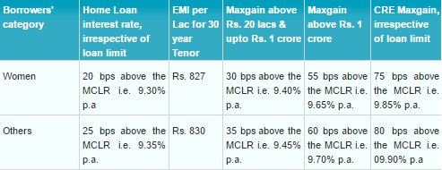

Home Loan
HOME LOANS - INTEREST RATES With effect from 01.08.2016

Woman should be the sole applicant or one of the co-applicants for Home Loan, and also
The woman should be the sole owner or one of the co-owners of the property proposed to be financed by the Bank
DOCUMENTS
List of papers/ documents applicable to all applicants:
Completed loan application
3 Passport size photographs
Proof of identify (photo copies of Voters ID card/ Passport/ Driving
licence/ IT PAN card)
Proof of residence (photo copies of recent Telephone Bills/ Electricity Bill/
Property tax receipt/ Passport/ Voters ID card)
Proof of business address for non-salaried individuals
Statement of Bank Account/ Pass Book for last six months
Signature identification from present bankers
Personal Assets and Liabilities statement
For guarantor (wherever applicable):
Personal Assets and Liabilities Statement
2 passport size photographs
Proof of identification as above
Proof of residence as above
Proof of business address as above
Signature identification from his/her present bankers
Additional documents required for salaried persons :
Original Salary Certificate from employer
TDS certificate on Form 16 or copy of IT Returns for last two financial years, duly acknowledged by IT Deptt.
Additional documents required for Professionals/self- employed/ other IT assesses:
Acknowledged copies of three years I.T. returns/ Assessment Orders.
Photocopies of challans evidencing payment of Advance Income Tax.
{kind=link}